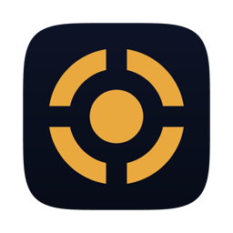

אין קיצורים עדיין — פתח ניהול.
בממיר אין דרך לשאול אילו אפליקציות מותקנות — הפרוטוקול לא תומך בזה. לכן פתח אפליקציה בממיר עם השלט הרגיל, והיא תופיע כאן כהצעה לשמירה.
חבר מסך וממיר לסט אחד. הניווט ילך לממיר, העוצמה למסך, וכפתור ההפעלה ידליק ויכבה את שניהם.
סריקה עמוקה בודקת כל כתובת ברשת — שימושי לטלוויזיה שהייתה כבויה.

שלט טלוויזיה —שלט לממירי Android TV ולטלוויזיות חכמות. הכל רץ ברשת הביתית — בלי ענן, בלי חשבון, ובלי שרת באמצע.
MIT · relbns ·
הפרוטוקול של Android TV Remote v2 אינו מתועד רשמית. הסכמות שבשימוש פוענחו על ידי louis49/androidtv-remote.
כל מכשיר דורש אישור חד־פעמי לפני שיקבל פקודות. אחריו נשמרת תעודה במחשב ולא תצטרך לצמד שוב.
הקוד לא מתקבל? ודא שהמחשב והמכשיר על אותה רשת, ונסה שוב — הקוד מתחלף בכל ניסיון.
סט מחבר מסך וממיר לשלט אחד. כל פקודה נשלחת למכשיר הנכון:
| ניווט, OK, חזרה, מדיה, טקסט | הממיר |
| עוצמת שמע, השתקה | המסך |
| כיבוי מסך, בחירת מקור | המסך |
| הפעלה / כיבוי | שניהם יחד |
אם המכשיר המועדף לא זמין או לא תומך בפקודה, היא נשלחת אוטומטית לשני. את הניתוב אפשר לקבוע לכל סט בנפרד, כי מה שעובד בסלון לא בהכרח עובד בחדר השינה.
ליד הכפתורים מוצג מה המכשיר עצמו מדווח. אם כתוב שם אין, הממיר מדווח סקאלת עוצמה של 0 מתוך 0 — כלומר אין לו עוצמה משלו, והוא מתעלם ממקשי העוצמה. הפקודה נשלחת ומגיעה; פשוט אין למה להחיל אותה.
זו גם הסיבה שכפתור ההשתקה לא מתחלף: הממיר לא מדווח על מצב השתקה, והכפתור מראה את האמת ולא ניחוש.
הסיבה הנפוצה היא בקרת עוצמה ב-CEC בהגדרות הממיר. כשהיא דלוקה הממיר מוסר את העוצמה לטלוויזיה בכבל ה-HDMI ומדווח שאין לו סקאלה משלו. זה עובד מצוין מול טלוויזיה שמיישמת את זה — וטלוויזיה ישנה פשוט מתעלמת, כך שהעוצמה נעלמת בדרך. כיבוי ההגדרה מחזיר לממיר את העוצמה שלו.
אם אחרי זה מוצג מספר אבל הוא לא זז, השמע יוצא בעוצמה קבועה: בהגדרות הממיר — תצוגה וקול ← פלט שמע — לבחור PCM / סטריאו במקום Passthrough. השתקה עדיין תעבוד גם במצב הזה, כי היא דגל נפרד.
הדרך היציבה בכל מקרה היא לצרף את הטלוויזיה עצמה לסט ולתת לה את העוצמה, במקום לנתב אותה דרך הממיר.
בטלוויזיות LG וסמסונג הרשימה אמיתית וחיה — הן מדווחות מה מותקן.
בממיר זה בלתי אפשרי: הפרוטוקול של Android TV מכיל הודעה אחת בלבד לאפליקציות — "הפעל את הקישור הזה" — ואין בו בקשה לרשימת אפליקציות.
לכן הממיר לומד: בכל פעם שאתה מחליף אפליקציה עם השלט הרגיל, הוא מדווח מה פועל כרגע, וזה מופיע כאן כהצעה לשמירה בלחיצה אחת.
טלוויזיה ישנה יותר עדיין נשלטת — דרך הממיר המחובר אליה בכבל HDMI. הכפתורים כיבוי מסך, מקור ועוצמת השמע נשלחים כמקשים לממיר, והוא מעביר אותם לטלוויזיה בתקן CEC.
זה דורש ש-CEC יהיה מופעל בטלוויזיה. כל יצרן קורא לזה אחרת:
כיבוי נשלח בערוץ הרגיל. הדלקה לא יכולה — כשהמכשיר כבוי, שקע הבקרה שלו מת יחד איתו ואין למי לדבר.
לכן ההדלקה נשלחת כחבילת Wake-on-LAN, וזה דורש שהמכשיר יישאר מחובר לרשת גם בכיבוי:
| חיצים | ניווט |
| Enter | אישור |
| Backspace | חזרה |
| רווח | נגן / השהה |
| H | מסך הבית |
| M | השתקה |
| + / − | עוצמת שמע |
| PageUp / PageDown | ערוץ |
| Esc | סגירת החלון |
| ⌘⇧T | פתיחת השלט מכל מקום |